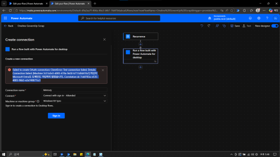

Power Automate Cloud 사용을 위한 설정

1. Microsoft Entra ID 등록 도구
- dsregcmd.exe Windows에서 Microsoft Entra ID 디바이스 등록 및 조인 상태 확인·진단·관리
- 설정 단계별로 /status 옵션으로 상태 및 적용 여부 확인
Microsoft Windows [Version 10.0.19045.7058]
(c) Microsoft Corporation. All rights reserved.
C:\Users\user>dsregcmd /status
+----------------------------------------------------------------------+
| Device State |
+----------------------------------------------------------------------+
AzureAdJoined : NO
EnterpriseJoined : NO
DomainJoined : NO
Device Name : device-name
+----------------------------------------------------------------------+
| User State |
+----------------------------------------------------------------------+
NgcSet : NO
WorkplaceJoined : YES
WorkAccountCount : 1
WamDefaultSet : YES
WamDefaultAuthority : consumers
WamDefaultId : https://login.microsoft.com
WamDefaultGUID : {xxxxxxxx-xxxx-xxxx-xxxx-xxxxxxxxxxxx} (MicrosoftAccount)
+----------------------------------------------------------------------+
| SSO State |
+----------------------------------------------------------------------+
AzureAdPrt : NO
AzureAdPrtAuthority : NO
EnterprisePrt : NO
EnterprisePrtAuthority : NO
+----------------------------------------------------------------------+
| Work Account 1 |
+----------------------------------------------------------------------+
WorkplaceDeviceId : xxxxxxxx-xxxx-xxxx-xxxx-xxxxxxxxxxxx
WorkplaceThumbprint : xxxxxxxx...xxxxxxxx
DeviceCertificateValidity : [ 2026-03-30 07:43:09.000 UTC -- 2036-03-30 08:13:09.000 UTC ]
KeyContainerId : xxxxxxxx-xxxx-xxxx-xxxx-xxxxxxxxxxxx
KeyProvider : Microsoft Platform Crypto Provider
TpmProtected : YES
WorkplaceIdp : login.windows.net
WorkplaceTenantId : xxxxxxxx-xxxx-xxxx-xxxx-xxxxxxxxxxxx
WorkplaceTenantName :
WorkplaceMdmUrl :
WorkplaceSettingsUrl :
NgcSet : NO
+----------------------------------------------------------------------+
| IE Proxy Config for Current User |
+----------------------------------------------------------------------+
Auto Detect Settings : YES
Auto-Configuration URL :
Proxy Server List :
Proxy Bypass List :
+----------------------------------------------------------------------+
| WinHttp Default Proxy Config |
+----------------------------------------------------------------------+
Access Type : DIRECT
+----------------------------------------------------------------------+
| Ngc Prerequisite Check |
+----------------------------------------------------------------------+
IsDeviceJoined : NO
IsUserAzureAD : NO
PolicyEnabled : NO
PostLogonEnabled : YES
DeviceEligible : YES
SessionIsNotRemote : YES
CertEnrollment : none
PreReqResult : WillNotProvision
For more information, please visit https://www.microsoft.com/aadjerrors
2. 로컬PC 설정
2.1. Windows 사용자 계정 추가 및 조직 계정으로 로그인
- 설정 → 계정 → 회사 또는 학교 엑세스
- 계정 추가시 표시되는 이 디바이스를 Microsoft Entra ID에 가입으로 로그인
- 현재 로컬 계정 로그아웃 후, 반드시 *조직계정(id@organization.com)*으로 로그인
2.3. Power Automate Machine Runtime 설치 및 디바이스 등록
- 머신환경 및 머신그룹 설정
- 문제해결 메뉴에 진단도구 실행으로 상태 확인
3. 클라우드 설정
3.1. PowerAutomate 온라인 등록 확인
- PowerAutomate Portal 접속
- 메뉴 중 Machines 항목에 머신 런타임에 등록된 머신 확인
3.2. 새 연결 생성
- 온라인 흐름을 만드는 과정에서 새 연결을 생성
- 사용자 이름 및 암호로 연결 - Attended 모드(유인 실행)용 조직계정 아이디/패스워드
- 로그인하여 연결 - 유인(프리뷰)
- 서비스 주체와 자격 증명으로 연결 - Unattended 모드(무인 실행)용